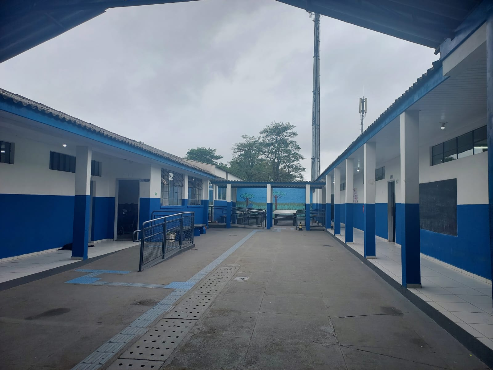

Sobre o colégio

O Colégio Estadual São Sebastião, localizado no bairro Umbará, em Curitiba, Paraná, é uma instituição de ensino pública que atende à comunidade local oferecendo educação básica e ensino médio. Fundado para suprir as necessidades educacionais da região, o colégio tornou-se um centro de referência para jovens e adultos, promovendo uma educação de qualidade e contribuindo para o desenvolvimento social e cultural dos alunos.
Sobre a biblioteca e livros
A biblioteca da escola São Sebastião, é repleta de livro de vários estilos, tipo dicionários, leis, pedagógicos, históricos entre outros livros. Dentro da biblioteca, também à os computadores e os notebooks, onde os alunos usam para fazer trabalhos, quizziz, lições dos professores entre outros.
Sobre a funcionária
O nome da funcionária é Elisangela, ela é formada em administração, normalmente ela cuida dos computadores e da biblioteca, ela também é uma profissional responsável por ajudar os professores há conseguir utilizar o educatrom, e também cuida da parte dos empréstimos e devoluções dos livros.